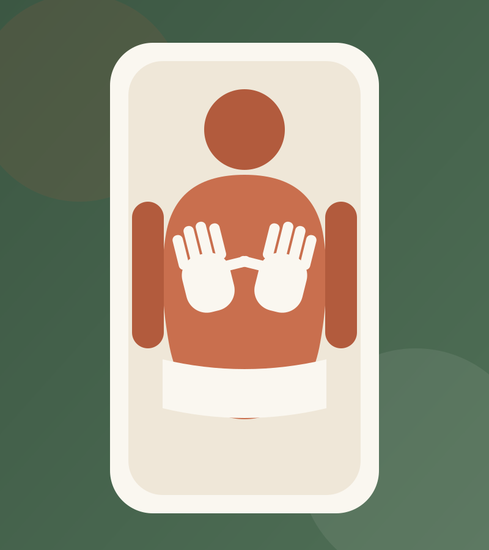
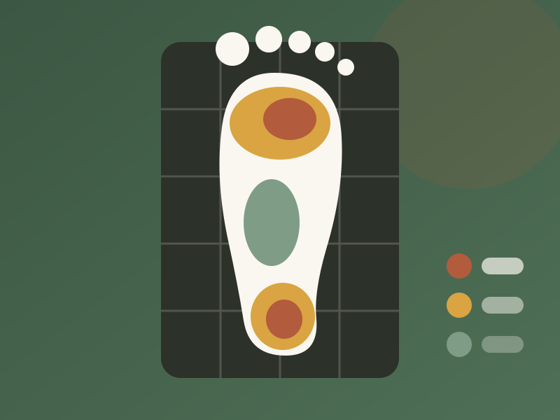

"Llegué con una fascitis que arrastraba desde enero y en la cuarta sesión ya corría 5 km sin dolor. Lucía me hizo el estudio de la pisada y las plantillas han sido un antes y un después."
San Julián
Fisioterapia y podología · Alameda de Hércules
Tratamos la causa, no solo el síntoma. Sesiones de 45 minutos, siempre con el mismo profesional y con un plan claro desde el primer día: qué te pasa, cuántas sesiones necesitas y qué puedes hacer tú en casa.

Servicios
Dos disciplinas que se complementan: muchas lesiones de rodilla, cadera o espalda empiezan en cómo pisas.
Recupera tu lesión y vuelve a entrenar sin miedo a recaer. Trabajamos la readaptación con cargas progresivas, no solo la camilla: el alta te la da poder correr, no que deje de doler.
Para contracturas rebeldes que no ceden con masaje. Desactivamos el punto gatillo con aguja y en la mayoría de casos notas el alivio en la misma sesión.
Pérdidas de orina, posparto, dolor en las relaciones: tiene tratamiento y no es "normal por la edad". Valoración en consulta privada con ecografía funcional.
Cervicalgias, lumbalgias y dolores de cabeza de origen cervical. Técnicas articulares y miofasciales para recuperar movilidad y dormir sin ese dolor sordo de fondo.
Uñas encarnadas, papilomas, helomas o dolor en el talón. Diagnóstico y tratamiento en consulta, con seguimiento hasta que el pie deja de darte guerra.
Análisis biomecánico en plataforma de presiones y en marcha. Si lo necesitas, plantillas personalizadas fabricadas a medida que caben en tu zapatilla de siempre.
Limpieza podológica completa: durezas, callosidades y corte correcto de uñas. Sales caminando como sobre algodones, ideal cada 6-8 semanas.
Precios y bonos
Pagas por sesión o ahorras con bono. Los bonos no caducan y se pueden compartir entre miembros de la misma familia.
40 €
45 minutos de fisioterapia o podología con valoración incluida. Quiropodia: 28 €.
Reservar sesión37 €/sesión
185 €
Para tratamientos cortos: una contractura, un esguince leve, un posparto reciente.
Quiero este bonoEl más elegido — 34 €/sesión
340 €
Ahorras 60 €. Ideal para lesiones deportivas, rehabilitación y suelo pélvico. Sin caducidad.
Quiero este bonoEstudio de la pisada completo con informe: 50 € (se descuenta si encargas tus plantillas). Plantillas personalizadas: desde 120 €.

Estudio de la pisada
Fascitis que vuelve cada temporada, sobrecargas siempre en la misma pierna, zapatillas que se desgastan por dentro: la pisada deja pistas.
En 40 minutos analizamos tu pie en estático y en marcha sobre plataforma de presiones, revisamos tu calzado y te entregamos un informe con lo que hemos visto. Solo si de verdad las necesitas, fabricamos plantillas a medida — y el precio del estudio se descuenta.
Tu primera visita
Sin listas de espera eternas: normalmente te vemos en menos de 48 horas.
Te escuchamos sin mirar el reloj: qué te duele, desde cuándo, qué lo empeora. Exploramos movilidad, fuerza y postura, y revisamos las pruebas médicas si las traes.
Te explicamos qué te pasa con palabras que se entienden, sin latinajos. Si tu caso necesita un médico antes que un fisio, te lo decimos con la misma claridad.
Cuántas sesiones estimamos, con qué frecuencia y qué objetivo tiene cada fase. Empezamos a tratar ese mismo día: la primera sesión no es solo hablar.
Te llevas 3-4 ejercicios concretos en vídeo por WhatsApp. El 50 % de tu recuperación pasa por lo que haces entre sesión y sesión.
Equipo
Nada de rotar de manos cada semana: tu profesional conoce tu caso de principio a alta.
Graduada en Fisioterapia (Univ. de Sevilla) · Máster en Fisioterapia Deportiva
Especialista en lesiones deportivas y punción seca. Fisio de un club de atletismo de la ciudad durante 6 años.
Graduado en Fisioterapia · Experto en Terapia Manual Ortopédica
Cervicalgias, lumbalgias crónicas y dolor de cabeza tensional. 12 años de camilla y manos que ya quisieran muchos.
Graduada en Podología · Experta en Biomecánica de la Marcha
Responsable del estudio de la pisada y las plantillas personalizadas. También lleva suelo pélvico junto a Marta.
Horario
Primera cita del día a las 8:30 y última a las 20:15, para que no tengas que pedir permiso en el trabajo.
Si te surge un imprevisto, avísanos con 24 horas y movemos la cita sin coste.
Opiniones
"Llegué con una fascitis que arrastraba desde enero y en la cuarta sesión ya corría 5 km sin dolor. Lucía me hizo el estudio de la pisada y las plantillas han sido un antes y un después."
San Julián
"Fui por pérdidas de orina tras mi segundo parto, muerta de vergüenza. Marta me trató con una delicadeza enorme y en dos meses hago deporte sin compresa. Ojalá haber ido antes."
Feria
"La punción seca con Javier me quitó en una sesión una contractura del trapecio que dos meses de masajes no habían tocado. Además te mandan los ejercicios en vídeo al móvil."
Macarena
Dudas frecuentes
Depende de la lesión, pero te damos una estimación honesta en la primera valoración. Una contractura suele resolverse en 1-3 sesiones; un esguince o una tendinopatía, en 6-10. Si vemos que no evolucionas como esperábamos, replanteamos el tratamiento — no te tenemos viniendo "por venir".
No es obligatorio: como fisioterapeutas y podólogos hacemos nuestra propia valoración. Ahora bien, si tienes radiografías, resonancias o informes previos, tráelos — nos dan información muy útil y evitan repetir pruebas.
Somos clínica privada y no dependemos de las condiciones de las aseguradoras: así decidimos nosotros la duración de cada sesión. Te entregamos factura para que la presentes a tu seguro si tu póliza ofrece reembolso, y para tu declaración si eres deportista federado.
Reserva
Rellena el formulario y te confirmamos la cita por WhatsApp en menos de 2 horas laborables.
Dónde estamos
Calle Calatrava 27, local bajo · Zona con aparcamiento en Torneo y parada de bus C1/C2 en la puerta.